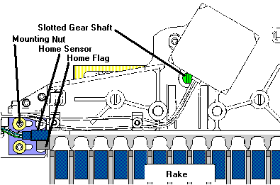

Adjusting RV Shuttle Home Sensor
This procedure describes how to adjust the RV shuttle home sensor.
Align the RV shuttle home sensor each time the sensor or the shuttle is removed or replaced, and occasionally when troubleshooting shuttle errors.
Note: The shuttle home position affects all other shuttle alignments.
-
Align the RV shuttle home sensor position.
Note: If the software has lost the alignments in the nvsetup.csv file, the system revisions can default to a state where the shuttle seems to not home correctly (the motor should run CW and CCW).
- If all alignments in Mechanics are noted to be zero, refer to the Restoring Instrument NVRAM (Access 2) procedure for alignment file recovery.
- From the Main Menu, select Diagnostics > Device Diagnostics > Mechanics. Select RV Shuttle as the Device option.
-
Remove all reaction vessels from the RV shuttle and waste chute.
Note: You do not need to remove the RVs in the rake.

-
Home the RV shuttle, and then disable the motors.
Note: If the shuttle home sensor is too far to the left or is defective, then the shuttle cycles several times when homed and stops in a random position.
-
Using a standard screw driver, manually rotate the slotted gear shaft clockwise.
- If the walking beam moves away from the rake, then:
- Enable the motors, home the shuttle, then disable the motors.
- Using a standard screw driver, manually rotate the slotted gear shaft counter-clockwise.
- If the walking beam moves to the right, then the sensor is aligned correctly. Proceed to the verification step.
- If the walking beam moves towards the rake and then to the right, then loosen the two mounting nuts located at the left side of the sensor bracket, move the sensor bracket to the right, and retighten the nuts.
- Enable the motors and repeat the process until the sensor is aligned.
- If the walking beam moves to the left before moving away from the rake, then loosen the two mounting nuts located at the left side of the sensor bracket, move the sensor bracket to the left, and retighten the nuts. Enable the motors and repeat the process until the sensor is aligned.
- If the walking beam moves away from the rake, then:
-
Verify operation of the RV shuttle.
-
If the shuttle home position has been adjusted, then confirm that the shuttle is aligned with the rake, the incubator track, and the pipettor.
Note: Refer to the Aligning RV Shuttle and Rake procedure.
- Initialize the instrument.
- Load RVs if necessary.
-
Perform the vessel holder exerciser test.
Note: Refer to the System Exerciser Routines Theory of Operation procedure.
-
If the shuttle home position has been adjusted, then confirm that the shuttle is aligned with the rake, the incubator track, and the pipettor.